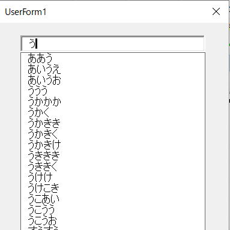

第27回.インクリメンタルサーチの実装

VBAのユーザーフォームで大量のリストから選択する場合、
リストが大量にあると単なるコンボボックスやリストでは探すのが大変になってしまいます。
検索したい単語をすべて入力してから検索するのではなく、文字を入力するたびに即座に候補を表示させる機能です。
逐次検索と言われたりします。
テキストボックスに文字を入力すると、リストボックスが自動的に表れ、入力テキストと部分一致するリストだけを表示します。
↓キーでリストにフォーカスを移し、EnterまたはTabで選択が決定されます。
ユーザーフォームの作成
以下のVBAコードで使用しているコントロールになります。
TextBox1
TextBox2
ListBox1
いずれも特に設定が必要なプロパティはありません。
テキストボックスはフォント等を適当に設定してください。
リストボックスは何も設定する必要がありません。
ユーザーフォームのVBAコード
Option Explicit
'イベント停止
Private StopEvent As Boolean
'リスト対象のTextBox
Private ActiveTextBox As Control
'ListBoxの1行：フォントサイズに合わせて適当に
Private Const BaseHeight As Single = 12
'フォーム初期処理
Private Sub UserForm_Initialize()
'リストボックスのスタイル等の設定
With Me.ListBox1
.Visible = False
.ListStyle = fmListStylePlain
.BorderStyle = fmBorderStyleSingle
.Font.Size = 11
.TabStop = False
End With
StopEvent = False
End Sub
'TextBox1のイベント
Private Sub TextBox1_Change()
Call TextBoxChange(Me.TextBox1)
End Sub
Private Sub TextBox1_Enter()
Call TextBoxChange(Me.TextBox1)
End Sub
Private Sub TextBox1_KeyDown(ByVal KeyCode As MSForms.ReturnInteger, ByVal Shift As Integer)
Call TextBoxKeyDown(Me.TextBox1, KeyCode, Shift)
End Sub
'TextBox2のイベント
Private Sub TextBox2_Change()
Call TextBoxChange(Me.TextBox2)
End Sub
Private Sub TextBox2_Enter()
Call TextBoxChange(Me.TextBox2)
End Sub
Private Sub TextBox2_KeyDown(ByVal KeyCode As MSForms.ReturnInteger, ByVal Shift As Integer)
Call TextBoxKeyDown(Me.TextBox2, KeyCode, Shift)
End Sub
'リストボックスのEnterまたはTabでTextBoxにTextを入れる
Private Sub ListBox1_KeyDown(ByVal KeyCode As MSForms.ReturnInteger, ByVal Shift As Integer)
Select Case KeyCode
Case vbKeyReturn, vbKeyTab
'Enter,Tabでリスト選択を決定
StopEvent = True
ActiveTextBox.Text = Me.ListBox1.Text
Me.ListBox1.Visible = False
ActiveTextBox.SetFocus
KeyCode = 0
StopEvent = False
Case vbKeyEscape
'Escでリストを消す
StopEvent = True
Me.ListBox1.Visible = False
ActiveTextBox.SetFocus
StopEvent = False
End Select
End Sub
'TextBoxのChangeイベント共通処理
Private Sub TextBoxChange(ByVal ctl As Control)
Set ActiveTextBox = ctl
If StopEvent Then Exit Sub
'未入力時は無視
If ctl.Text = "" Then
Me.ListBox1.Visible = False
Exit Sub
End If
'リストに表示する配列を作成
Dim ary
ary = getListArray(ctl)
'候補がない場合はリストボックスは表示しない
If UBound(ary) - LBound(ary) < 0 Then
Me.ListBox1.Visible = False
Exit Sub
End If
'候補が1つで完全一致の場合はリストを表示しない
If UBound(ary) - LBound(ary) = 0 Then
If ctl.Text = ary(LBound(ary)) Then
Me.ListBox1.Visible = False
Exit Sub
End If
End If
With Me.ListBox1
.List = ary
'テキストボックスのすぐ下に同じ幅で表示
.Top = ctl.Top + ctl.Height
.Left = ctl.Left
.Width = ctl.Width
.Height = BaseHeight * .ListCount
'フォーム内に収める
If .Top + .Height > Me.InsideHeight Then
.Height = Me.InsideHeight - .Top
End If
.Visible = True
End With
End Sub
'TextBoxのKeyDownイベント共通処理
Private Sub TextBoxKeyDown(ByVal ctl As Control, _
ByVal KeyCode As MSForms.ReturnInteger, _
ByVal Shift As Integer)
Select Case KeyCode
Case vbKeyReturn, vbKeyTab
'リストを非表示に
Me.ListBox1.Visible = False
Case vbKeyDown
'↓キーの時にリストにフォーカスを移す
If Me.ListBox1.Visible = True Then
On Error Resume Next '想定外を考慮
Me.ListBox1.SetFocus
On Error GoTo 0
Me.ListBox1.ListIndex = 0
End If
End Select
End Sub
'インクリメンタルサーチ
Private Function getListArray(ByVal ctl As Control) As Variant
Dim ary As Variant
'テキストボックスによってリストを変更
ary = getListArrayByTextBox(ctl)
'スペース1文字の場合はスペースを消して全リストを表示
If ctl.Text = " " Or ctl.Text = " " Then
ctl.Text = ""
End If
'Filterで部分一致で絞り込み
ary = Filter(ary, ctl.Text, True, vbTextCompare)
getListArray = ary
End Function
'テキストボックスごとのリスト配列取得
Private Function getListArrayByTextBox(ByVal ctl As Control) As Variant
Dim ary
Select Case ctl.Name
Case "TextBox1"
ary = Worksheets("リスト").Range("A1:A30")
Case "TextBox2"
ary = Worksheets("リスト").Range("B1:B30")
Case Else
MsgBox "???"
End Select
'Transposeで1次元配列に
getListArrayByTextBox = WorksheetFunction.Transpose(ary)
End Function
ユーザーフォームのVBAコードの解説
インクリメンタルサーチを実装するテキストボックスが大量にあるという事は無いと思います。
イベントを共通化できなくもありませんが、さすがにこの場合は不要だと思います。
Filter関数ではなく配列をループで探すようにすれば、いろいろな検索方法にすることができますので、必要に応じて改変してみてください。
リストにない入力は認めない場合の実装は、今回のリストボックスの使い方ではかなり難しくなります。
単純に、Exitイベントで処理しようとするとなかなかうまく動作させることが出来ません。
Private Sub TextBox1_Exit(ByVal Cancel As MSForms.ReturnBoolean)
この中でCancel=Trueとした場合、フォーカスをリストボックスに移せなくなり、どうにも都合が悪いです。
今回の場合に限らず、ExitイベントでCancelすると、他のコントロールに移れなくなり実装がとても難しくなります。
インクリメンタルサーチの最後に
そもそも、リストが大量にある場合は、グループ分けして多段階の絞り込みの方が良い場合も多いと思います。
操作不慣れな人でも早く間違えずに入力できる仕組みはどのようなものか、これを良く検討して使ってみてください。
同じテーマ「ユーザーフォーム入門」の記事
第17回.Enterキーで次のコントロールに移動する
第18回.２段階のコンボボックス
第19回.数値専用のテキストボックス
第20回.テキストボックスの各種イベント
第21回.ユーザーフォームの各種イベント
第22回.コントロールの動的作成
第23回.イベントプロシージャーの共通化
第24回.イベントプロシージャーの共通化（Enter,Exit）
第25回.簡易音楽プレーヤーの作成
第26回.プログレスバーを自作する
第27回.インクリメンタルサーチの実装
新着記事NEW ・・・新着記事一覧を見る
VBA100本ノック 100本目：WEBから100本ノックのリストを取得｜VBA練習問題（3月3日）
VBA100本ノック 99本目：自動席替え（行列と前後左右が全て違うように）｜VBA練習問題（3月2日）
VBA100本ノック 98本目：席替えルールが守られているか確認｜VBA練習問題（3月1日）
VBA100本ノック 97本目：Accessデータを取得（グループ集計）｜VBA練習問題（2月27日）
VBA100本ノック 96本目：Accessデータを取得（マスタ結合&抽出）｜VBA練習問題（2月26日）
VBA100本ノック 95本目：図形のテキストを検索するフォーム作成｜VBA練習問題（2月24日）
VBA100本ノック 94本目：表範囲からHTMLのtableタグを作成｜VBA練習問題（2月23日）
VBA100本ノック 93本目：複数ブックを連結して再分割｜VBA練習問題（2月22日）
VBA100本ノック 92本目：セルの色を16進で返す関数｜VBA練習問題（2月20日）
VBA100本ノック 91本目：時間計算（残業時間の月間合計）｜VBA練習問題（2月19日）
アクセスランキング ・・・ ランキング一覧を見る
1.最終行の取得（End,Rows.Count）｜VBA入門
2.RangeとCellsの使い方｜VBA入門
3.変数宣言のDimとデータ型｜VBA入門
4.マクロって何？VBAって何？｜VBA入門
5.Range以外の指定方法（Cells,Rows,Columns）｜VBA入門
6.セルのコピー&値の貼り付け（PasteSpecial）｜VBA入門
7.繰り返し処理（For Next)｜VBA入門
8.セルに文字を入れるとは（Range,Value）｜VBA入門
9.マクロはどこに書くの（VBEの起動）｜VBA入門
10.とにかく書いてみよう（Sub,End Sub）｜VBA入門
- ホーム
- マクロVBA応用編
- ユーザーフォーム入門
- インクリメンタルサーチの実装
このサイトがお役に立ちましたら「シェア」「Bookmark」をお願いいたします。
記述には細心の注意をしたつもりですが、
間違いやご指摘がありましたら、「お問い合わせ」からお知らせいただけると幸いです。
掲載のVBAコードは動作を保証するものではなく、あくまでVBA学習のサンプルとして掲載しています。
掲載のVBAコードは自己責任でご使用ください。万一データ破損等の損害が発生しても責任は負いません。